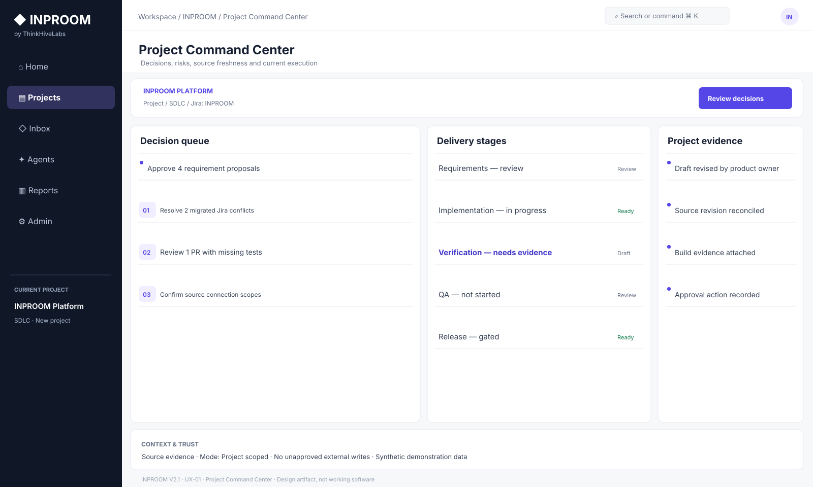

Project Command Center
Decisions, risks, source freshness and current execution

This is a navigable design gallery. It does not run actual Jira, GitHub, Confluence or AI actions. Read functional specifications.
Decisions, risks, source freshness and current execution

This is a navigable design gallery. It does not run actual Jira, GitHub, Confluence or AI actions. Read functional specifications.